Móveis Brasil, ambientes planejados
Móveis planejados em Salto e região
Cozinhas, dormitórios, salas e áreas gourmet desenhados para o seu espaço. Você aprova o projeto em 3D antes de qualquer peça ser produzida.
Showroom em Salto/SP. Mais de 10 anos de história.
01Cozinha
Ambientes
Escolha o espaço que você quer transformar
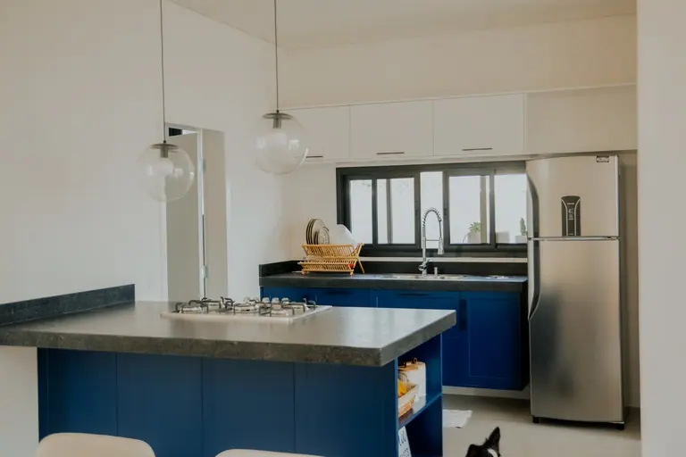
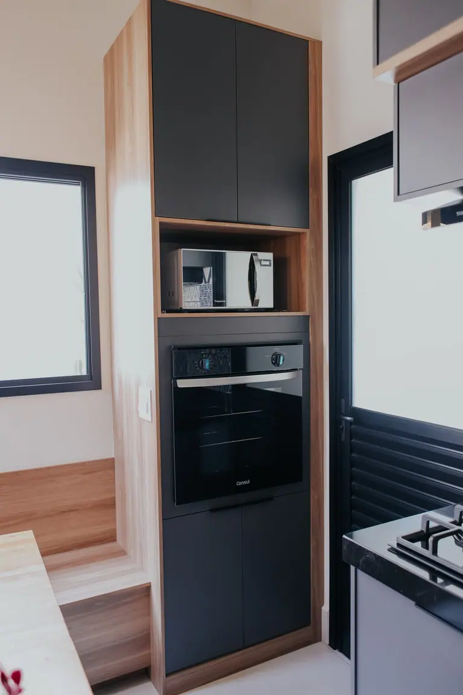
Cozinhas
Marcenaria sob medida, bancadas, ilhas e organização pensadas para a rotina de quem cozinha todo dia.
Quero um projeto de cozinha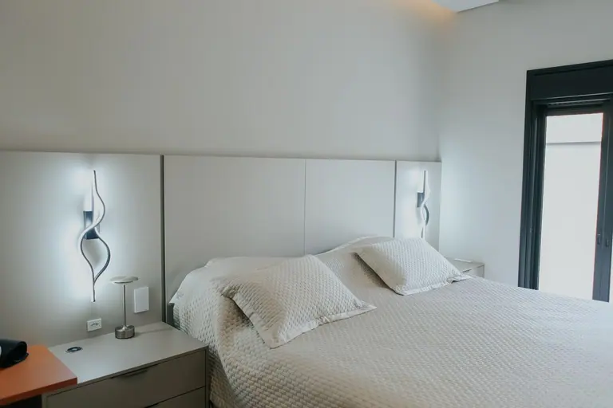
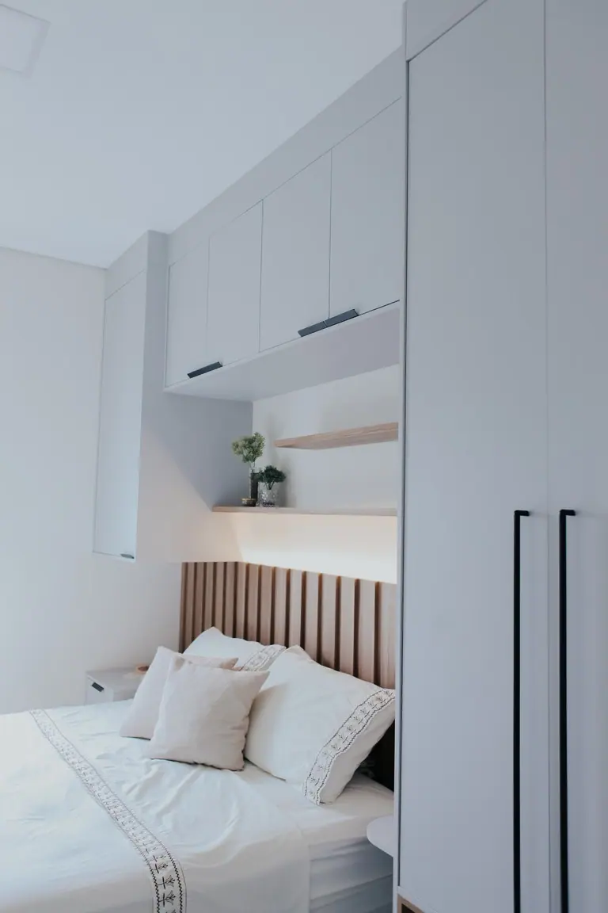
Dormitórios
Cabeceiras, painéis e iluminação em LED que deixam o quarto acolhedor e aproveitam cada parede.
Quero um projeto de dormitório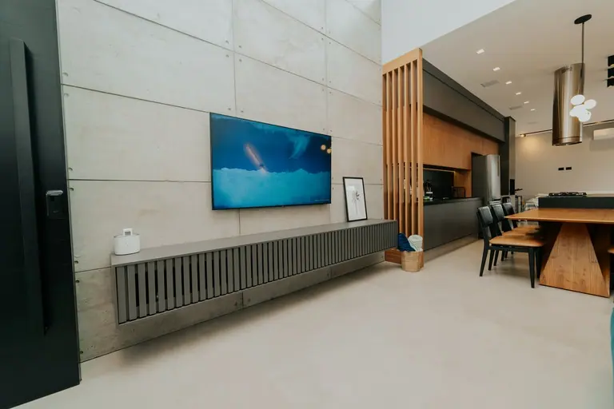
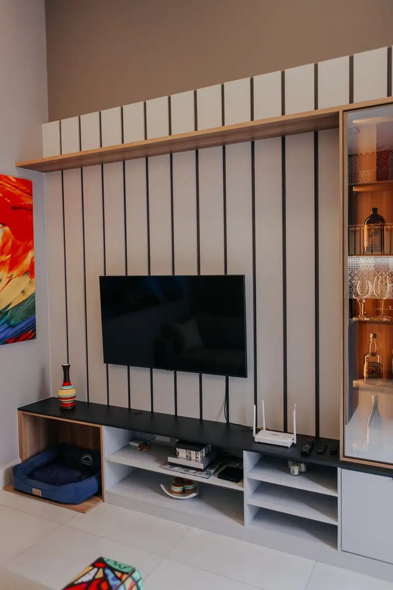
Salas
Painéis, ripados e racks que organizam a TV, a vitrine e a decoração em um só desenho.
Quero um projeto de sala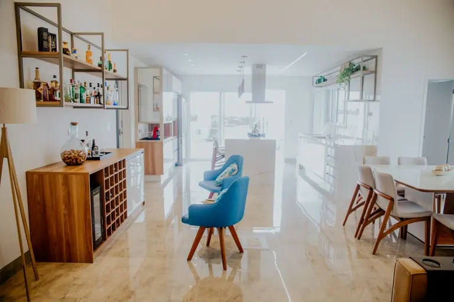
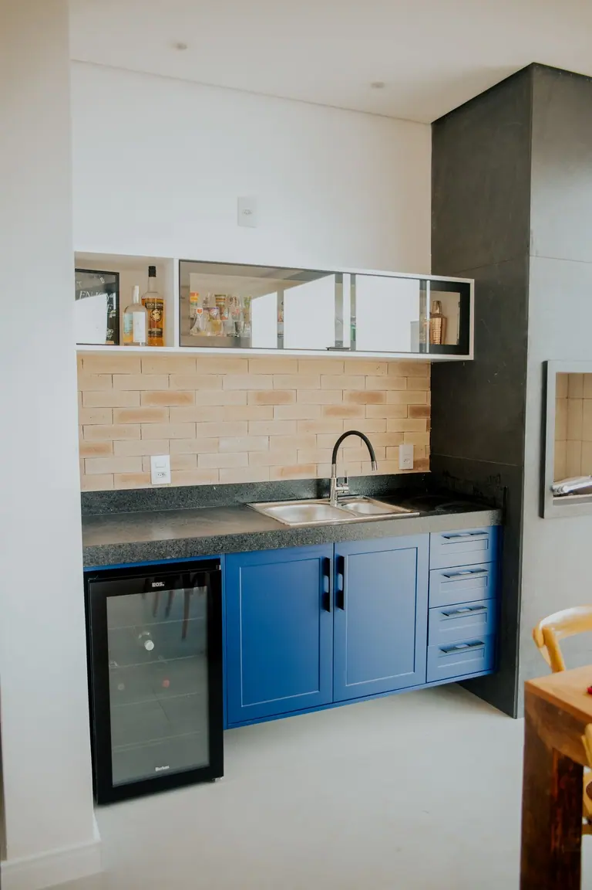
Área gourmet
Bancadas, nichos e prateleiras para receber, com espaço para bebidas, louças e adega.
Quero um projeto de área gourmet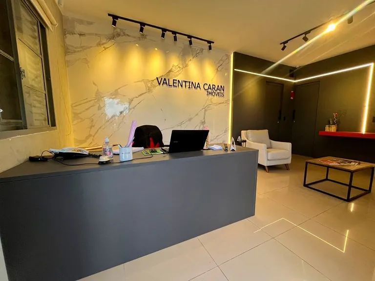
Escritórios
Ambientes de trabalho em casa ou na empresa, com mobiliário feito para a sua rotina.
Quero um projeto de escritório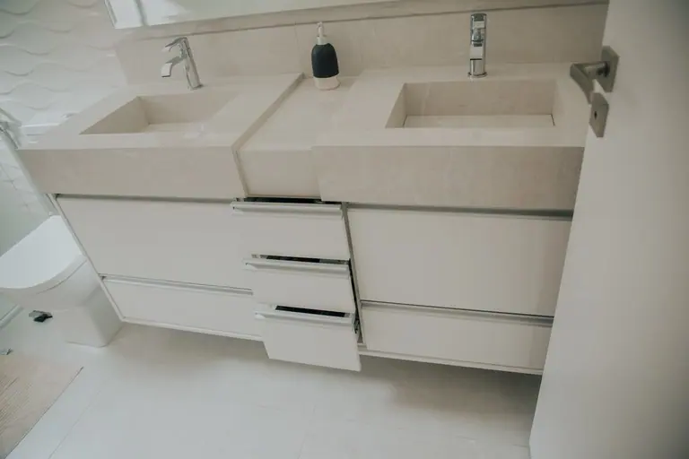
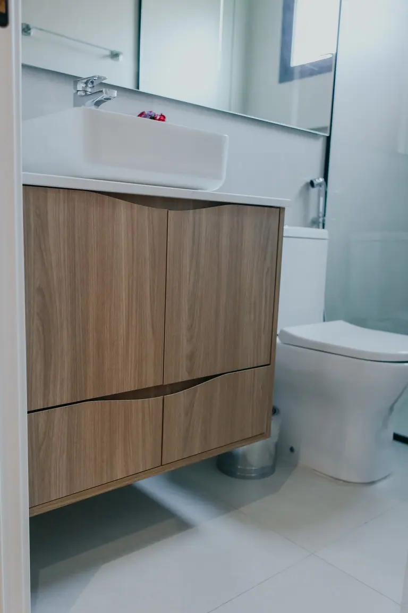
Lavanderia e banheiros
Gabinetes e armários sob medida para espaços pequenos que precisam render.
Quero um projeto de lavanderia ou banheiroProjetos entregues
Fotos reais de ambientes instalados
Escolha um projeto e veja cozinhas, salas, dormitórios e detalhes de acabamento de perto.
Como funciona
Do primeiro contato à montagem
Um caminho claro, com o projeto aprovado por você antes de ir para a produção.
Conversa e briefing
Você conta como usa o ambiente e o que não pode faltar. Se já tem planta ou arquiteto, é só avisar.
Projeto em 3D
Você vê o ambiente desenhado e aprova o projeto antes de qualquer peça ser produzida.
Medição final
Antes de enviar para a produção, o ambiente é medido de novo. Paredes nunca são totalmente retas, e os ajustes são feitos antes.
Montagem sem surpresa
Em condomínio, a montagem é planejada de acordo com as normas de cada um. Prazo médio de 45 dias entre contrato e montagem.
Entrega e pós-venda
Você confere o ambiente pronto com a equipe e conta com o pós-venda depois da entrega.


Um projeto acompanhado em etapas: do ambiente em obra à cozinha entregue.
- Salto
- Itu
- Indaiatuba
- Sorocaba
- Jundiaí
- Campinas
- Elias Fausto
- Porto Feliz
- São Paulo
Showroom
Veja os acabamentos de perto
Passe no showroom em Salto, conheça os materiais e converse com a equipe sobre o seu ambiente.
Rua Tiradentes, 383, Vila Teixeira, Salto/SPTelefone e WhatsApp: (11) 2840-4800
Dúvidas
Perguntas frequentes
Qual é o prazo?
O prazo médio é de 45 dias entre a assinatura do contrato e a montagem. O prazo do seu projeto é combinado com você na proposta.
Como eu começo?
Chame no WhatsApp e conte qual ambiente você quer planejar. Se você já tem planta ou trabalha com arquiteto, avise na primeira mensagem.
Vocês atendem condomínio?
Sim. A Móveis Brasil já atende condomínios da região e planeja a montagem de acordo com as normas de cada empreendimento.
Atendem fora de Salto?
Atendemos Salto e região e também fazemos projetos em São Paulo. Se você está em outra cidade, mande uma mensagem e a gente confirma.
Fazem móveis para empresa?
Sim, também planejamos ambientes comerciais, como escritórios e salas de trabalho.
Contato
Conte o que você quer planejar
Preencha e a conversa abre no WhatsApp com a mensagem pronta. Você revisa antes de enviar.